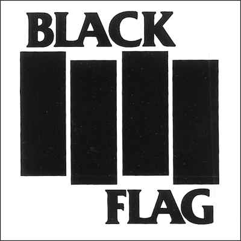
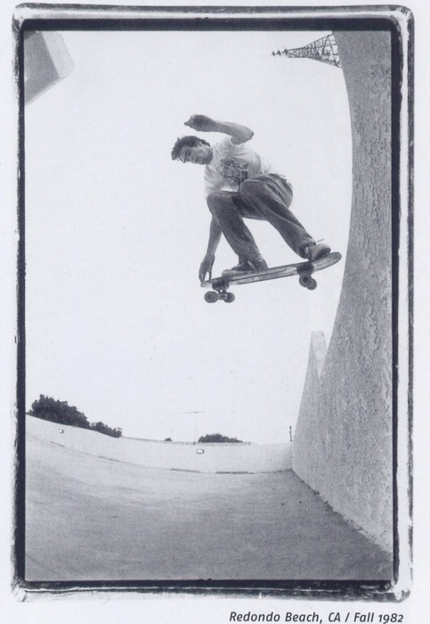
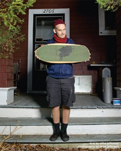
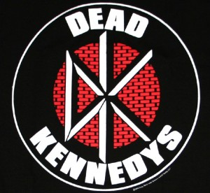
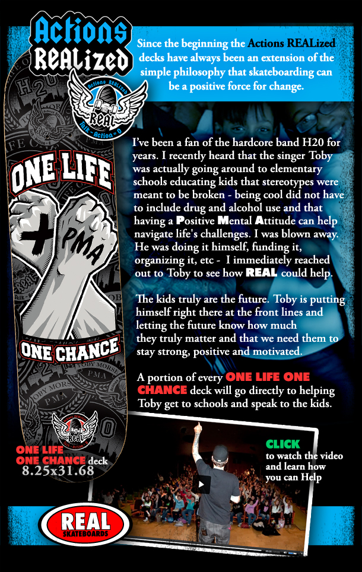

Skateboarding ни когда не был субкультурой, в обычной форме проявления: музыка, одежда, поведение.Это всегда было lifestyle, при этом музыка влияла на него. Так, в 80-е skateboarding был довольно развитым, уличным, но еще не коммерческим. Поэтому скейтеры тех времен любили аналогичную, не коммерческую музыку. В те времена, punk-rock был уже мертв. Молодежь хотела что-то новое, и таким взрывом стал hardcore-punk.
Hardcore-punk был усовершенствованной версией punk-рока, только с более тяжелым и быстрым звуком. Считается, что первой группой, которая играла hardcore-punk, была Black Flag, с очень простым и оригинальным логотипом.

Henry Rollins, вокалист данной группы, сам был скейтером.

Песни данной группы можно услышать в таких видео как: 1031-Bleed for me, Zero-Misled youth, Foundation-nervous breakdown, H-street-lick, Blind-video days, Santa Cruz-streets on fire и в документальном видео Black Label –Who cares? The Duane Peters Story.
Лучший друг Henry Rollins, Ian MacKaye тоже катался и создал легендарную группу Minor Threat.

Песни данной группы можно услышать в таких видео как: Pig Slaughterhouse, Zero-New blood, 411VM-выпуск 14,29,34,46, Foundation-nervous breakdown, Planet Earth –Silver, Hiatus.
Вслед за Black Flag появилось много hardcore групп.
В Сан-Франциско появилась группа Dead Kennedys, у них тоже был свой уникальный логотип.

В известном фильме об истории Z-boys “Lords of Dogtown”, режиссером которого был Stacy Peralta, есть момент, когда Jay Adams идет на их концерт.
С данной группой часто ездил на концерты как Tony Alva, так и Jay Adams.
У данной группы есть такие песни, связанные со скейтбордингом как “Skate and Destroy”, альбом “Skateboard Party”.
Песни данной группы можно услышать в таких видео как: Zero promo 2006, 1031-Bleed for me, Emerica-yellow, Transworld-interface, Think-damage.
Влиятельными также были такие группы как Adolescents с песней “Skate Babylon”,7 seconds, Bad Brains, The germs, Reagan Youth, Murphy’s Law, Cro – Mags, Warzone, Agnostic Front, Negative approach, Youth of Today, Gorilla Biscuits, Shelter, Chain of strength, Inside out.
В фильме Thrashin ребята врываются под Circle Jerks
появления скейтбординга даже никто не мог представить о спонсорах, скейтпарках и возможности заработать на этом.
Много скейтеров того времени, помимо катания играли в разных группах и наоборот. Данная музыка была частью катания и, наоборот, катание была частью для многих музыкантов. Все делалось исключительно для себя. В этом заключатся вся ценность и искренность данной музыки.
Концерты обычно приводились дома, в школах, заброшенных зданиях – в местах, где не нужно было платить за аренду или платить символически. Исходя из этого, стоимость входа на концерт заключалась лишь в покрытии аренды.
Thrasher, первый и самый известный журнал о скейтбординге, в обязательном порядке включал рубрику “Notes from the underground”, где, как и тогда и сейчас, можно было прочитать о группах, которые играют по тому же принципу, что и в 80х.
В известной игре Tony Hawks pro skater: American Wasteland в саундтреке к игре добавлено много каверов hardcore-punk групп. Много скейтовых брендов до сих пор делают колаборейшены с группами.
Real skateboards в серии досок Actions REALized, выпустили деку совместно с группой H2O, для поддержки Toby Morse

Все это еще раз подчеркивает важность данной музыки в развитии скейтбординга того времени.
Если Вы еще не знакомы с данным жанром музыки, рекомендую ознакомиться, ведь вполне вероятно, что Вы, как и скейтеры тех времен, включите в плеере данную музыку и будете лететь на бешенной скорости, наслаждаясь музыкой, по даунхилу/улице/пулу/рампе/хендрейлу/с хорошего гепа.
Рекомендуем почитать еще статью от наших друзей Ditch Mag
Напоследок три отличнейших профайла и пару хороших песен с концертов!
rame title="YouTube video player" width="480" height="390" src="httpwww.youtube.com/embed/DqkX6TvYpg4" frameborder="0" allowfullscreen>
ekend.com.ua/?p=242" href="http://www.facebook.com/sharer.php">Share
вот это класс!
превосходно)))
хорошее было время
А Суисайдал…
Один позэст ту скейт чего стоит